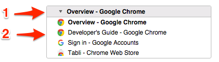
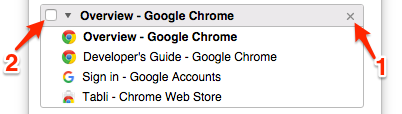
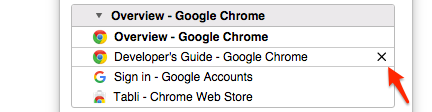
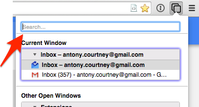
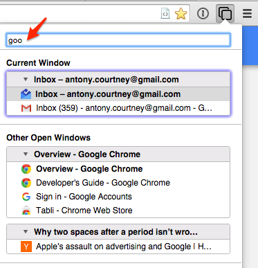
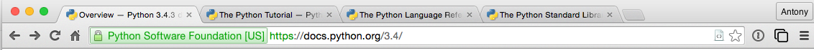
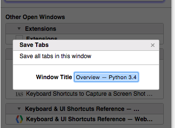
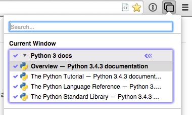
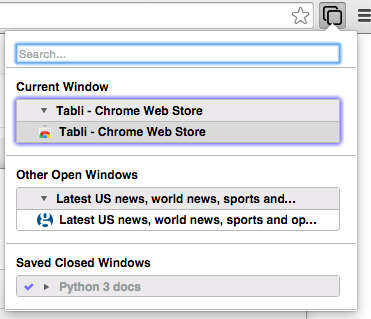

Usage Guide
Quick Start
If you want to get started using Tabli right away, here’s all you need to know:
There are two ways to open the Tabli popup window:
• Recommended: Use the keyboard shortcut (Ctrl-. by default). It’s worth memorizing this.
• Alternatively: Use your mouse to click on the Tabli icon in the toolbar: 
When the popup opens you should see
something like the image below:
• You can switch to a specific window or tab just by clicking on it with the mouse.
• You can interactively search for a tab or window based on page title or URL by typing a few characters in the Search box. As you type the set of windows and tabs shown in the summary view will be restricted to those that match your search.
• You can use the up and down arrow keys (↓ and ↑) to navigate through the set of tabs or windows. Hold down Ctrl (“Ctrl + ↓” and “Ctrl + ↑”) to move by whole windows. Switch to a specific window or tab by hitting Enter.
• You can close any window or tab by clicking the 'x' close button that appears when you hover the mouse over that item.
That should be all you need to start using Tabli effectively. If you want to learn more, read on below.
Switching Windows and Tabs
Individual window summaries look like this:
Each window summary consists of:
• A header bar (1) showing the window’s title. The window’s title is just the title of the most recently active tab for that window, just as in Chrome’s built-in ‘Windows’ menu.
• A list of the window’s open tabs (2), showing the FavIcon and title for each tab. The most recently active tab’s title is shown in bold.
You can switch to another window or tab (bring it to the foreground and give it keyboard and mouse focus) by clicking on the name of the window or tab.
Closing Windows and Tabs
When the mouse is hovering over a window header or individual tab summary, you will see some extra controls appear:
These extra controls are an “X” Close Button (1), and a Save Checkbox (2). Clicking on the close button will close the associated browser window and all of its tabs. The save checkbox allows you to save the set of open tabs in a window, explained later in this document.
Similarly, you will also see a close button as you hover the mouse over an individual tab summary:
You can close individual tabs by clicking their close button.
Searching for Windows and Tabs
Recall the Search box at the very top of the Tabli popup window:
This input area will be given the keyboard focus immediately after the Tabli popup is opened, regardless of whether you open it by clicking on the toolbar icon or using the Ctrl-. keyboard shortcut.
Typing in the search box will immediately restrict the set of window and tab summaries displayed to those that match the search string in the Search input box. A window summary will be shown if the window title or any tab matches the search string. Tab URLs (not shown) are included as well as tab titles when matching the search string even though the tab URL isn't visible in the UI.
For example, if you type 'goo' into the search box, you will see something like:
The set of windows and tabs shown is restricted to those matching the search term ('goo'). Although the titles for some windows and tabs don't appear to match the search term they are shown because the underlying web pages have an URL that includes google.com in the host part of the URL. Usually typing a few characters is sufficient to reduce the number of windows and tabs enough to visually scan the window and tab summaries to find the desired window or tab.
Keyboard Navigation (Shortcuts)
All of the actions needed to find and switch between windows and tabs using Tabli can be accessed directly from the keyboard, using the following keyboard shortcuts:
| Action | Key Sequence | Notes |
|---|---|---|
| Open Tabli Popup | Ctrl-. |
Default keybinding, any browser window |
| Activate Selected | Enter |
switch to selected window or tab |
| Next Tab | ↓ |
|
| Previous Tab | ↑ |
|
| Next Window | Ctrl-↓ |
|
| Previous Tab | Ctrl-↑ |
|
| Dismiss Tabli | ESC |
|
| Edit Search Term | all other keys |
The typical sequence of find and switch to a specific window via Tabli keyboard shortcuts goes like this:
• Type Ctrl+. to open the Tabli popup.
• Type the first few characters of the desired window or tab name.
• Use arrow keys (possibly with Ctrl) to move the selected window / tab. The current selection is highlighted with a slightly different background color.
• Once the desired window or tab is selected press Enter to switch to it.
Saving Windows and Tabs
For frequently used reference material, Tabli supports Saved Windows for saving a set of related tabs that can be easily restored later.
It's easiest to explain this feature with an example:
Suppose I'm working on a project using the Python programming language. Since I only very occasionally write Python these days I find it helpful to keep all the following pages of reference documentation readily accessible:
• The main Python Docs page
• The Python Tutorial
• The Python Language Reference
• The Python Library Reference
To set up the above links as a Saved Window in Tabli, do the following:
First, create a new browser window and open each of the above links (and just those links) in its own tab. The browser window will look something like this:
When you have the browser window set up with the tabs you want, open Tabli, move the mouse to the title bar for the window summary for our newly created browser window, and click on the "Save Window" checkbox at the left edge of the title bar:

After clicking the checkbox, you will be presented with a modal dialog to give the saved window a title:
The default title text is the title of the browser window. But since this is just the title of the currently active tab, this may not be best choice. In this example I'd probably change it to something like "Python 3 docs". Type the window name and press Enter.
The next time you open Tabli, the window summary for this window will look like this:
A few things are different in the visual summary of the window:
• The checkbox in the title bar indicates that the window has been saved.
• The window's title is now the title you chose when saving the window rather than the title of the active tab.
• The checkbox next to each tab indicates that this tab has been saved as part of the saved window state.
Closing and Restoring Saved Windows
As with any other window, you can close a Saved Window by clicking the "X" close button in the title bar of a Saved Window. The browser window (and all its tabs) will be closed as usual. However, the next time you open Tabli, you will see a new section, "Saved, Closed Windows" underneath the list of Open Windows:
By default Saved, Closed windows hide the saved tabs and display only the title bar to conserve space in the popup. If you forget what tabs are saved in a closed, saved window, you you can toggle whether tabs are displayed for any window by clicking the triangular expand icon next to the window's title:

which will result in showing the saved tabs:

You can re-open a Closed, Saved window either by clicking on the window summary with the mouse, by pressing Enter after selecting the window summary using the keyboard shortcuts. Opening a Closed, Saved window will re-open the saved window (and all saved tabs) in a fresh browser window.
Saved Window "Drift"
After clicking links and opening new tabs in a saved window over a few hours in a normal browsing session, opening Tabli might show a window summary something like this:

Notice that now only some of the tabs are checked; these indicate our previously saved tabs.
Note, too, the couple of grayed out but checked entries at the bottom of the summary. These are tabs that were saved with the window but are no longer open in the browser. Selecting these saved but closed tabs will re-open the page in a new in the window.
When the mouse hovers over an unsaved tab in a saved window a checkbox appears at the left edge of the tab summary, as shown here for "PEP 008 -- Style Guide for Python ...". Checking this checkbox will add this to the set of saved tabs for the window. Conversely, clicking on the checkmark at the left edge of a previously saved tab will remove that tab from the set of saved tabs for the window.
Reverting Saved Windows
If your browsing sessions are anything like mine, even topic-focused saved windows will drift quite a bit from their base state over the course of a normal browsing session, as you perform searches, open new tabs, follow links and discussion threads, etc. At some point, either because you eventually find the definitive answer to some obscure technical question you were investigating or because your OCD kicks in, you may decide you want to just discard all the ephemeral tabs that have accumulated and revert your saved window back to its saved state.
This is what the blue chevron button is for in the title bar of saved windows:

Clicking this revert button will bring up the following confirmation dialog:

Clicking OK or pressing Enter will, as expected, close the ephemeral tabs and re-open the saved tabs for the window, effectively reverting the saved window to its base saved state.
Saved Windows are Stored as Bookmark Folders
Finally, it's worth mentioning how Saved Windows and Tabs are stored. After saving a window, if you open the Chrome Bookmark Manager, you will see a structure something like this:

Every saved window is saved as a Bookmarks Folder under "Other Bookmarks/Tabli Saved Windows" with a folder name that is the name that you specified when saving the window. Within that folder every saved tab is stored as a bookmark. It's important to note that these are ordinary bookmarks and bookmark folders; there is no extra hidden state. While I don't recommend it, you may use the Bookmarks Editor to make changes, and these changes will be reflected the next time you start Chrome or force a reload of Tabli via the Extensions page.
...And that's it!
I hope you find Tabli a useful addition to Chrome. Please send feedback, questions, suggestions and bug reports to tabli-feedback@antonycourtney.com.